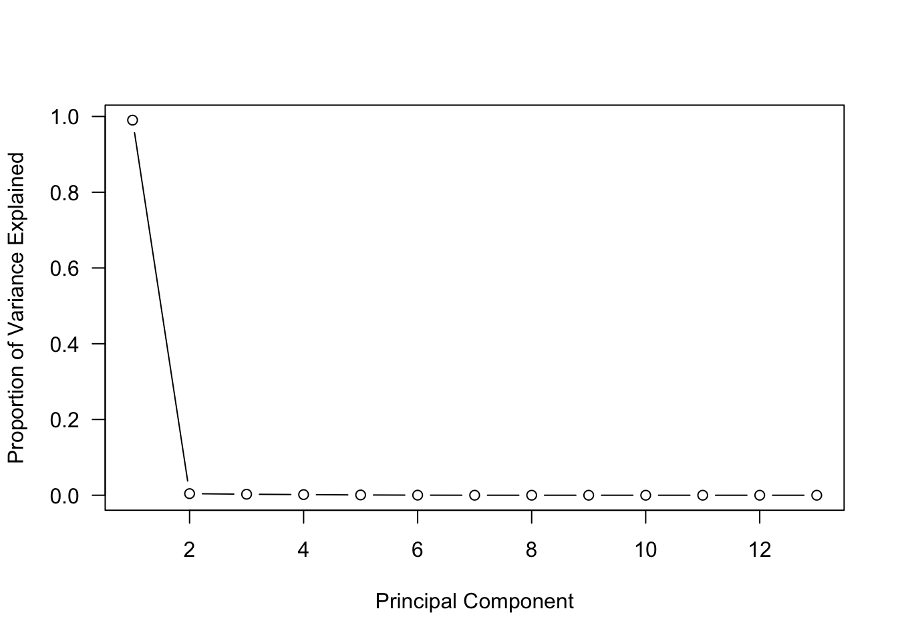
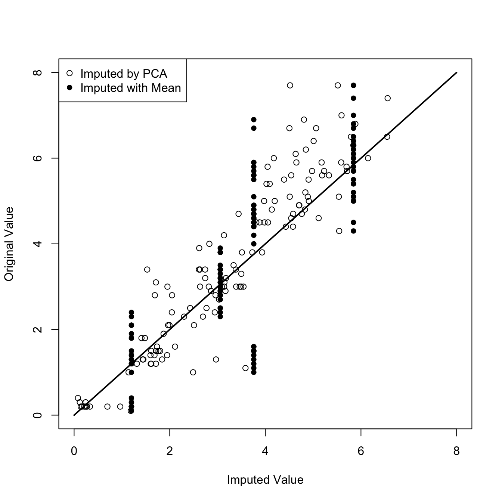

Principal component analysis (PCA) is one of the most important methods of unsupervised learning with many applications:
Summarization: summarize a \(p\)-dimensional matrix \(\textbf{X}_{(n\times p)}\) through a lower-dimensional matrix \(\textbf{Z}_{(n\times m)}\). \(m\) is usually much smaller than \(p\), and in many cases \(m=2\), especially if the results are to be presented grahically.
Visualization: Instead of all \({p\choose 2}\) two-way scatterplots between \(p\) variables, display a single scatterplot of the first two principal components.
Dimension reduction: Use the first \(m\) principal components as inputs to a regression model (see PCR, Section 8.3.2). Apply a clustering algorithm such as \(k\)-means clustering to the first \(m\) principal components.
Imputation: Use principal components iteratively to complete a numerical matrix that contains missing values.
Given the many applications it is no surprise that PCA is a key method in the toolbox of data scientists and machine learners. It goes back to 1901, when it was invented by Karl Pearson.
A principal component is a linear combination of the \(p\) inputs. The elements of the \(j\)th component score vector are calculated as follows: \[
z_{ij} = \psi_{1j} x_{i1} + \psi_{2j} x_{i2} + \cdots + \psi_{pj} x_{ip} \quad i=1,\cdots,n; j=1,\cdots,p
\] The coefficients \(\psi_{kj}\) are called the rotations or loadings of the principal components. In constructing the linear combination, the \(x\)s are always centered to have a mean of zero and are usually scaled to have standard deviation one. More on whether to scale the data for PCA follows below.
The scores \(z_{ij}\) are then collected into a score vector \(\textbf{z}_j = [z_{1j}, \cdots, z_{nj}]\) for the \(j\)th component. Note that for each observation \(i\) there are \(p\) inputs and \(p\) scores. So what have we gained? Instead of the \(p\) vectors \(\textbf{x}_1, \cdots, \textbf{x}_p\) we now have the \(p\) vectors \(\textbf{z}_1, \cdots, \textbf{z}_p\). Because of the way in which the \(\psi_{kj}\) are found, the PCA scores have very special properties:
They have zero mean (if the data was centered):\(\sum_{i=1}^n z_{ij} = 0\)
They are uncorrelated: \(\text{Corr}[z_j, z_k] = 0, \forall j \ne k\)
\(\text{Var}\left[\sum_{j=1}^p z_j\right] = \sum_{j=1}^p \text{Var}[z_j] = p\) (if data was scaled)
The components are ordered in terms of their variance \(\Rightarrow \text{Var}[z_1] > \text{Var}[z_2] > \cdots > \text{Var}[z_p]\)
This is useful in many ways:
The components provide a decomposition of the variability in the data. The first component explains the greatest proportion of the variability, the second component explains the next largest proportion of variability and so forth.
The contributions of the components are independent, each component is orthogonal to the other components. For example the second component is a linear combination of the \(X\)s that models a relationship not captured by the first (or any other) component.
The loadings for each component inform about the particular linear relationship. The magnitude of the loading coefficients reflects which inputs are driving the linear relationship. For example, when all coefficients are of similar magnitude, the component expresses some overall, average trend. When a few coefficients stand out it suggests that the associated attributes explain most of the variability captured by the component.
To summarize high-dimensional data, we can ignore those components that explain a small amount of variability and turn a high-dimensional problem into a lower-dimensional one. Often, only the first two principal components are used to visualize the data and for further analysis.
Principal versus Principle.
A principle refers to a fundamental law or rule, for example, “the principles of Christianity” or “the principle of judicial review”. You might agree with someone in principle, but disagree with their approach. A principal, on the other hand, refers to something head, chief, main, or leading. The principal of the school is the head of the school. They are leading the school. The principal reason for doing something is the main reason for doing it.
PCA is principal component analysis because the leading components are the main accountants of variability.
An alternative interpretation of the principal components is to find \(p\) vectors \(\textbf{z}_1,\cdots,\textbf{z}_p\) as linear combinations of the \(\textbf{x}_1,\cdots,\textbf{x}_p\) such that
\(\textbf{z}_1\) explains the most variability of the \(X\)s
\(\textbf{z}_2\) explains the second-most variability of the \(X\)s
… and so forth
and the \(\textbf{z}\) are orthogonal: \(\textbf{z}_j^\prime\textbf{z}_k = 0, \forall j,k\).
\(\textbf{z}_1\) is a projection of the \(X\)s in the direction that explains the most variability in the data.
\(\textbf{z}_2\) is a projection of the \(X\)s in the direction that explains the second-most variability in the data.
the \(\textbf{z}_j\) represent jointly perpendicular directions through the space of the original variables.
Viewing the components as projections into perpendicular directions hints at one technique for calculating the rotation matrix \(\boldsymbol{\Psi} = [\psi_{kj}]\) rotation and the variance decomposition: through a matrix factorization into eigenvalues and eigenvectors.
23.2 Eigenvalue Decomposition
The PCA can be computed with a singular value decomposition (SVD) of the matrix \(\textbf{X}\) or with an eigendecomposition of the covariance or correlation matrix of \(\textbf{X}\). The SVD is numerically more stable than the eigendecomposition, but we can demonstrate the computations easily using eigenvalues and eigenvectors.
The eigendecomposition of a square \(n \times n\) matrix \(\textbf{A}\) is \[
\textbf{A}= \textbf{Q}\boldsymbol{\Lambda}\textbf{Q}^{-1}
\] where \(\textbf{Q}\) is the \(n \times n\) matrix containing the eigenvectors of \(\textbf{A}\) and \(\boldsymbol{\Lambda}\) is a diagonal matrix with the eigenvalues of \(\textbf{A}\) on the diagonal. If \(\textbf{A}\) is symmetric, then \(\textbf{Q}\) is orthogonal and \(\textbf{Q}^{-1} = \textbf{Q}^\prime\). The eigendecomposition of a real symmetric matrix is thus
\[
\textbf{A}= \textbf{Q}\boldsymbol{\Lambda}\textbf{Q}^\prime
\] How can we interpret eigenvectors and eigenvalues? The \(n\times 1\) vector \(\textbf{q}\) is an eigenvector of \(\textbf{A}\), if it satisfies the linear equation \[
\textbf{A}\textbf{q} = \lambda\textbf{q}
\] for a scalar \(\lambda\). This scalar is called the eigenvalue corresponding to \(\textbf{q}\). There are \(n\) eigenvectors and when they are arranged as the columns of a matrix you get \(\textbf{Q}\).
Example: Eigenanalysis of Correlation Matrix
In R you can obtain the eigenvectors and eigenvalues of a square matrix with the eigen function. Principal components can be computed with the prcomp or the princomp functions, both included in the base stats package. prcomp uses the singular-value decomposition of \(\textbf{X}\), princomp relies on the eigendecomposition of the covariance matrix.
The following data were used to illustrate PCA scores in Section 8.3.2.
The eigen function returns the diagonal elements of \(\boldsymbol{\Lambda}\) in e$values and the matrix \(\textbf{Q}\) of eigenvectors in e$vectors. The input matrix of the decomposition can be reconstructed from those:
A <- e$vectors %*%diag(e$values) %*%t(e$vectors)round((c - A),4)
What happens if we multiply the \(10 \times 4\) data matrix with the \(4\times 4\) matrix of eigenvectors of the correlation matrix? First, we center and scale the data. The result is a \(10 \times 4\) matrix of linear transformations. These are the scores of the PCA.
We prefer the prcomp function to compute the PCA over the princomp function because it is based on the singular value decomposition, which is numerically more stable than the eigendecomposition. (Singular values are the square roots of the eigenvalues and since eigenvalues can be very close to zero working with square roots stabilizes the calculations.)
By default, prcomp centers the data but does not scale it. Add scale.=TRUE to scale the data as well.
prcomp reports the standard deviations (pca$dev) and rotation matrix \(\boldsymbol{\Psi}\) (pca$rotation). You will recognize the rotation as the matrix of eigenvectors from the previous analysis and the standard deviations as the square roots of the variances of the scores computed earlier. When retx=TRUE is specified, the function returns the PCA scores in pca$x.
The sum of the variances of the principal components is \(p=4\) and it can be used to break down the variance into proportions explained by the components.
summary(pca)
Importance of components:
PC1 PC2 PC3 PC4
Standard deviation 1.7196 0.9186 0.44555 0.02424
Proportion of Variance 0.7393 0.2109 0.04963 0.00015
Cumulative Proportion 0.7393 0.9502 0.99985 1.00000
The first principal component, with somewhat equal loading coefficients for \(X_1\), \(X_2\), and \(X_3\), explains 73.927% of the overall variance. The second component, which is dominated by \(X_4\), explains an additional 21.095% of the variance.
23.4 Predicting in a PCA
You can predict a new observation using principal components by calculating the component scores for the new obs. For example, suppose the input values for the new data point are the square roots of the values for the first observation:
xx <-sqrt(data[1,]) # the "new" observationpredict(pca, newdata=xx)
The predicted value is a vector, with one element for each of the components. To reconstruct the predicted value, we can apply the rotation matrix to the new observation. Before doing so, the values need to be centered and scaled to match the derivation of the rotations. It is thus important to apply the same centering and scaling values that were used on the training data:
How should we choose the number of principal components to use in subsequent analyses? If the goal is summarization or visualization \(m=2\) is common. If the components are input to a regression model, cross-validation can be used in PCR (Section 8.3.2). In other situations you have to choose \(m\) such that a “fair” amount of variation is explained. To help with that, a scree plot is commonly used. Scree describes the small rock material that accumulates at the base of a mountain or steep rock formation (Figure 23.1). The scree forms a sharp transition from the rocky cliff to the area of the rock fragments.
Figure 23.1: Scree at the base of a mountain. Source: Wikipedia
In principal component analysis the scree plot displays the proprtion of variance explained against the number of components.
Example: Hitters Data (ISLR2)
For the Hitters baseball data set from James et al. (2021), the PCA scree plot is obtained as follows:
library(ISLR2)pca_hit <-prcomp(Hitters[,1:13],.scale=TRUE) plot(summary(pca_hit)$importance[2,],type="b",ylab="Proportion of Variance Explained",xlab="Principal Component",las=1)

Scree plot for first thirteen attributes of Hitters data.
The sharp “knee” (“elbow”) at \(m=2\) shows that most of the variability is captured by the first principal component.
23.6 Biplot
The biplot of a PCA displays the scores and loadings for two principal components in the same visualization. Typically, it is produced using the first two components as these account for the most variability. The scores \(z_{ij}\) are shown in the biplot as a scatter, the rotations are displayed as arrows. Points that are close to each other on the biplot have similar values of the inputs. The length of an arrow depicts the contribution of the variable, long arrows correspond to large coefficients in the rotation matrix. The angle of the arrows shows the correlation with other variables:
uncorrelated variables have perpendicular arrows
highly correlated variables have arrows that point in the same direction
Example: PCA for Iris Data
For the Iris data, the first two principal component account for 95% of the variability in the four flower measurements.
Importance of components:
PC1 PC2 PC3 PC4
Standard deviation 1.7084 0.9560 0.38309 0.14393
Proportion of Variance 0.7296 0.2285 0.03669 0.00518
Cumulative Proportion 0.7296 0.9581 0.99482 1.00000
The raw data for the biplot (Figure 23.2) of the first two components are the first two columns of the rotation matrix and the first two columns of the score matrix:
Figure 23.2: Biplot for first two principal components of Iris data.
There are two systems of axes on the biplot. The axes on the bottom and on the left are for the scores of the principal components. The axes on the right and on the top are for the variable arrows (the rotations). Note that the Sepal.Width rotation for the first two components is [-0.2693474, -0.9232957] but the arrow does not point at that coordinate. The biplot function applies a scaling to the scores and the arrows, which you can suppress by adding scale=0 to the function call.
We see from the biplot that the scores cluster in distinct groups. The arrow for Sepal.Width is pointing away from the arrows of the other variables, which suggests that it is not highly correlated with the other flower measurements. The length and width of the petals are very highly correlated, however; their arrows point into nearly the same direction. This can be verified by computing the correlation matrix of the measurements:
Using the autoplot function in the ggfortify library allows you to color the scores in the biplot by another variable. We see that the distinct group of scores low in PC1 correspond to the Iris setosa species.
I. setosa has large sepal widths and the negative rotation coefficient for Sepal.Width in PC1 separates the species in that dimension from the other species.
# A tibble: 3 × 4
Species min max mean
<fct> <dbl> <dbl> <dbl>
1 setosa 2.3 4.4 3.43
2 versicolor 2 3.4 2.77
3 virginica 2.2 3.8 2.97
Looking at the sign of the rotation coefficients is helpful to determine which input variables increase or decrease a component compared to other inputs. However, you cannot interpret the sign as increasing or decreasing a target variable. The rotation matrix of a principal component analysis is unique up to sign. Two software packages might produce the same rotation matrices, but with different signs of the coefficients. The princomp function in R has a fix_sign= option that controls the sign of the first loading coefficient to be positive.
23.7 To Scale or Not To Scale
The variables should always be centered to have mean 0, so that the loadings have the same origin. Should the variables also be scaled to have the same variance?
In general, scaling is recommended whenever the results of an analysis depends on units of measurements. For example, when calculating distances it matters whether time is measured in days, hours, minutes, or seconds. The choice of units should not affect the outcome of the analysis. Similarly, large things tend to have greater variability than small things. Since the principal components are arranged in the order of variability explained, variables that have very large variances (because of their units of measurement or size) will dominate the components unless scaling is applied.
Example: U.S. Arrests
The USArrests data set contains statistics, in arrests per 100,000 residents for assault, murder, and rape in each of the 50 U.S. states in 1973. Also given is the percent of the population living in urban areas. The data set comes with R.
Importance of components:
PC1 PC2 PC3 PC4
Standard deviation 83.7324 14.21240 6.4894 2.48279
Proportion of Variance 0.9655 0.02782 0.0058 0.00085
Cumulative Proportion 0.9655 0.99335 0.9991 1.00000
The first principal component in the unscaled analysis explains 96.55% of the variability. The component is dominated by the Assault variable, with a loading coefficient of 0.9952.
Importance of components:
PC1 PC2 PC3 PC4
Standard deviation 1.5749 0.9949 0.59713 0.41645
Proportion of Variance 0.6201 0.2474 0.08914 0.04336
Cumulative Proportion 0.6201 0.8675 0.95664 1.00000
In the scaled analysis the variables are on equal footing with respect to their dispersion. The loading coefficients are more evenly sized in the first principal component which explains 62.01% of variability in the scaled analysis. The Assault variable is not allowed to dominate the component analysis because of its large variance compared to the other variables.
The biplots for the scaled and unscaled analysis are markedly different. The dominance of Assault in the unscaled analysis makes it difficult (impossible) to meaningfully interpret the biplot (Figure 23.3).
Figure 23.3: Biplots in unscaled (left) and scaled (right) analysis.
In the next section we encounter a situation where we center but do not scale the \(\textbf{X}\) matrix, when values of the inputs are reconstructed.
23.8 Imputation through Matrix Completion
In the introduction to this chapter we expressed the PCA scores as a linear function of the inputs: \[
z_{ij} = \psi_{1j} x_{i1} + \psi_{2j} x_{i2} + \cdots + \psi_{pj} x_{ip} = \sum_{k=1}^p \psi_{kj}x_{ik}
\]
This relationship can be reversed, expressing the inputs as a linear combination of the PCA scores and the rotations: \[
x_{ij} = \sum_{k=1}^p z_{ik}\psi_{kj}
\]
To demonstrate, we can reconstruct the values for the first observation for the Iris data set from its PCA results. First, we only center the data and do not scale:
If only a subset of the principal components is used, we obtain an approximation of the input value. If \(M < p\), then
\[
x^*_{ij} = \sum_{k=1}^M z_{ik}\psi_{kj} \approx x_{ij}
\] In fact, \(x^*_{ij}\) is the best \(M\)-dimensional approximation to \(x_{ij}\) in terms of having the smallest Euclidean distance.
The sepal width of the first observation can be approximated based on the first two principal components as
If principal component analysis can be used to approximate the observed input values, then it can be used to predict unobserved values. This is the idea behind using PCA to impute missing values, a technique known as matrix completion. The advantage of using PCA to fill in missing values in matrices is to draw on the correlations between the variables, as compared to imputing missing values by column means, which ignores information from other variables.
It is important to point out, however, that this form of imputation is only appropriate if the missingness process is missing completely at random (MCAR): the missingness is unrelated to any study variable, including the target variable. For example, if a measurement cannot be taken because an instrument randomly stopped functioning, the missing value occurred completely at random. If the measurement cannot be taken because the instrument cannot record objects of that size, then the process is not MCAR.
An iterative algorithm for matrix completion is described in $12.3 of James et al. (2021) and implemented in the eimpute library in R. The algorithm starts with imputing missing values with the means of the observed data and iterates the following steps:
Perform a low-rank PCA, that is, a PCA with \(M < p\).
Replace the unobserved values with approximations based on the PCA scores and rotation.
Compute the mean squared error between observed \(x_{ij}\) and predicted \(x^*_{ij}\). As long as the mean squared error continues to decrease, return to step 1.
Figure 23.4 displays observed and imputed values for the Iris data set when 20% of the observations are randomly set to missing (by assigning NA). Two methods of imputation are used: using the column means, and a low-rank PCA approximation with 2 principal components using eimpute(x=iris_miss,r=2).
There are only four possible imputed values when using the column means, all missing values for a particular variable are replaced with the same column mean. The PCA imputation produces much more variety in the imputed values since it draws on the correlations between the variables.
Because missing values were introduced artificially, we have access to the true values and can compute the correlation between original and imputed values. This correlation is 0.83 for the imputation based on column means and 0.93 for the imputation based on the PCA.

Figure 23.4: Comparison of original and imputed values for Iris data with 20% missingness.
Figure 23.2: Biplot for first two principal components of Iris data.Figure 23.3: Biplots in unscaled (left) and scaled (right) analysis.
James, Gareth, Daniela Witten, Trevor Hastie, and Robert Tibshirani. 2021. An Introduction to Statistical Learning: With Applications in r, 2nd Ed. Springer. https://www.statlearning.com/.

{kind=link}
{kind=link}